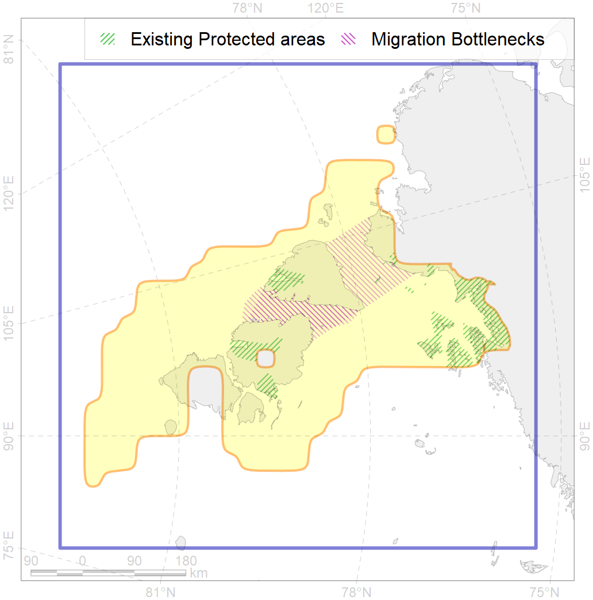
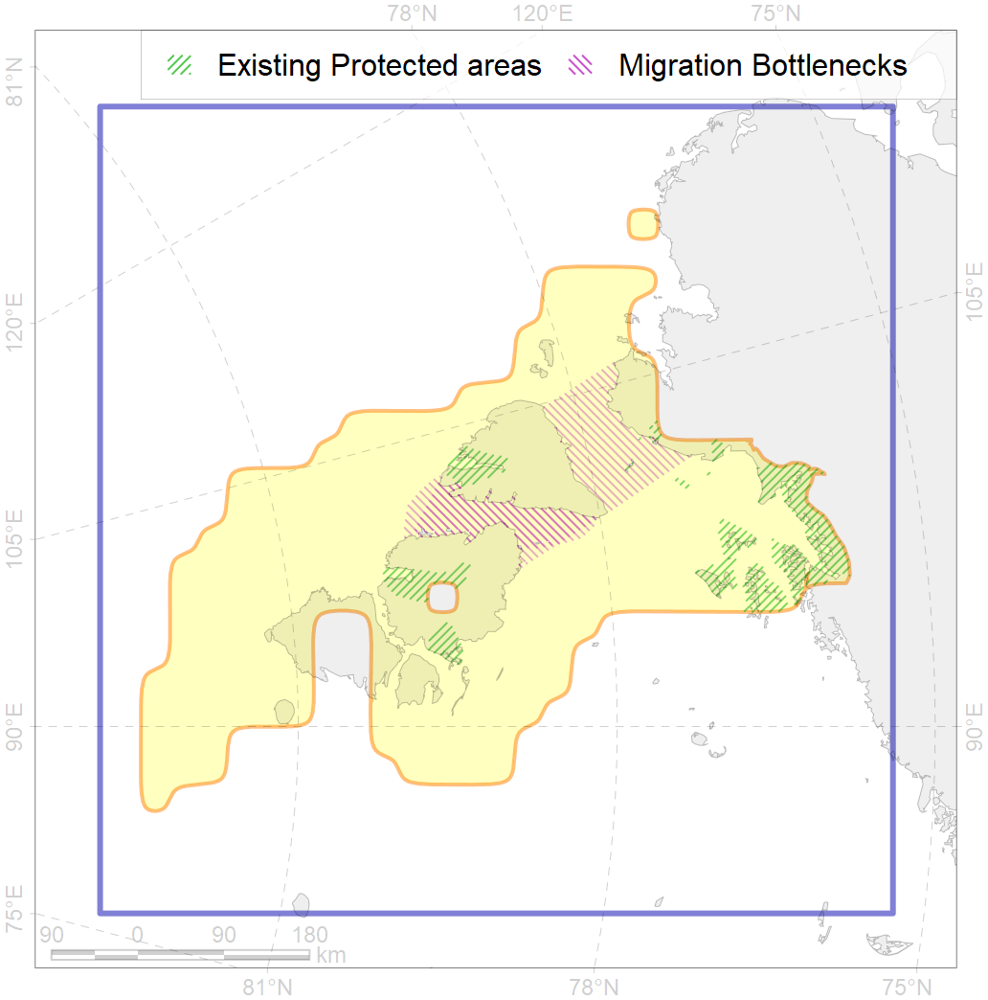

14
Use Accenter to see more details and to make your own research on ArcNet Priority Area for Conservations (PACs).
![[]{style="display: none;"}](ra97ff315a.png) 

1
CFs entirely within the PAC area
17
CFs with a quarter of their amount within the PAC area
19
CFs with their targets achieved in the PAC
34
CFs with at least half of their target achieved in the PAC
| CF | Name | Share of the Total Amount within the PAC | Conservation Target | Share of the Target Achievement for the ArcNet | PAC’s Contribution to the Target Achievement |
|---|---|---|---|---|---|
| 7251 | 7251 Severnaya Zemlya kelp patches | 100.0% | 30.0% | 320.8% | 100.0% |
| 3002 | Fast Ice distribution in the Severnaya Zemlya region | 97.5% | 6.0% | 1459.4% | 98.8% |
| 8043 | Severnaya Zemlya glacial termini | 92.9% | 50.0% | 165.7% | 96.3% |
| 7111 | II.1.1.5. Severnaya Zemlya domain | 89.6% | 12.3% | 656.4% | 94.7% |
| 3110 | polynya SZ | 84.1% | 20.0% | 363.2% | 91.4% |
| 3111 | polynya Laptev W | 63.7% | 20.0% | 264.6% | 81.5% |
| 3028 | Marginal Ice Zone distribution in April in the Laptev Sea LME | 62.5% | 12.0% | 439.8% | 74.7% |
| 6038 | Ivory gull (Pagophila eburnea) Kara Sea breeding colonies | 53.3% | 64.8% | 79.4% | 73.3% |
| 7116 | II.1.2.1. Kara Sea slope | 50.7% | 50.0% | 82.3% | 80.6% |
| 7220 | Kara Sea kelp patches (20, 21) | 50.0% | 30.0% | 163.3% | 95.1% |
| 3057 | Multiyear Ice distribution in September in the Laptev Sea LME | 49.8% | 18.0% | 249.0% | 91.0% |
| 3010 | Fast ice distribution in the Eastern part of the Kara Sea | 45.5% | 6.0% | 739.5% | 87.0% |
| 6097 | 6097 PagophileburneKaraSebreeding colonies | 36.0% | 43.2% | 74.5% | 74.4% |
| 7102 | II.1.1.11. Northern Taymur Canyon | 33.7% | 27.0% | 107.3% | 91.4% |
| 2013 | Bearded seal whelping areas in the Laptev Sea | 28.2% | 24.0% | 100.9% | 47.5% |
| 6006 | Brent goose (Branta bernicla bernicla) breeding&moulting grounds | 27.2% | 18.0% | 138.9% | 43.3% |
| 1013 | Laptev Walrus haulouts | 25.7% | 90.0% | 24.7% | 23.6% |
| 7101 | II.1.1.10. Laptev outer shelf | 24.6% | 15.0% | 153.5% | 93.4% |
| 7117 | II.1.2.2. Laptev Sea slope | 23.4% | 35.0% | 58.0% | 57.6% |
| 2049 | Ringed seal whelping areas in the Kara Sea | 23.1% | 24.0% | 87.2% | 46.1% |
| 6028 | Glaucous gull (Larus hyperboreus hyperboreus) breeding grounds | 22.1% | 12.0% | 161.6% | 25.4% |
| 9012 | polar bear of the LV (Laptev Sea) subpopulation distribution | 22.0% | 26.4% | 72.9% | 60.3% |
| 9028 | polar bear denning areas of KS (Kara Sea) subpopulation | 21.9% | 52.8% | 35.9% | 35.7% |
| 3056 | Multiyear Ice distribution in September in the Kara Sea LME | 19.5% | 18.0% | 91.8% | 70.5% |
| 6089 | 6089 Alle alle polaris breeding colonies | 18.1% | 36.0% | 44.5% | 26.2% |
| 7108 | II.1.1.2. Eastern Kara insular areas and banks at middle and outer shelf | 18.1% | 17.8% | 86.4% | 57.3% |
| 3038 | Marginal Ice Zone distribution in July in the Kara Sea LME | 17.4% | 24.0% | 63.0% | 49.0% |
| 7118 | II.1.2.3. Laptev Sea slope canyons | 16.9% | 25.0% | 60.1% | 51.5% |
| 9010 | polar bear of the KS (Kara Sea) subpopulation distribution | 13.5% | 26.4% | 44.3% | 43.2% |
| 6003 | Little Auk (Alle alle polaris) breeding colonies | 13.1% | 54.0% | 22.0% | 12.3% |
| 9030 | polar bear denning areas of LV (Laptev Sea) subpopulation | 12.8% | 52.8% | 21.2% | 21.2% |
| 7110 | II.1.1.4. Voronin Trough | 12.5% | 35.0% | 23.1% | 22.4% |
| 7026 | Eurasian shelf region | 12.1% | 8.6% | 120.0% | 48.9% |
| 6040 | Ivory gull (Pagophila eburnea) postbreeding grounds in the Barents and the Kara Sea | 11.5% | 21.6% | 45.8% | 21.5% |
| 5007 | Beluga of the Barents-Kara-Laptev Sea stock general distribution | 10.0% | 24.0% | 37.0% | 24.7% |
| 4036 | Distribution of the Borisov’s Arctic cod (Arctogadus borisovi) (F33) | 8.0% | 13.2% | 54.3% | 23.9% |
| 7109 | II.1.1.3. Middle and outer eastern shelf of Kara Sea | 7.9% | 5.6% | 116.7% | 60.8% |
| 3009 | Fast ice distribution in the Western part of the Laptev Sea | 7.5% | 6.0% | 104.1% | 27.6% |
| 3013 | Fast ice distribution in the Central part of the Kara Sea | 7.1% | 6.0% | 100.2% | 19.1% |
| 4090 | Fish zoogeography, Arctic Region, Subarctic Transitional-Atlantic Province, Euro-Asian Bathyal District | 7.1% | 15.9% | 38.0% | 21.1% |
| 4010 | Feeding area of the Muksun (Coregonus muksun) (F 15) | 6.7% | 32.4% | 18.9% | 18.6% |
| 5090 | Narwhal in the Russian Arctic assumed summer range | 6.6% | 12.0% | 45.7% | 26.4% |
| 2011 | Bearded seal whelping areas in the Kara Sea | 6.4% | 24.0% | 24.3% | 23.8% |
| 6099 | 6099 Rissa tridactyla tridactyla breeding colonies | 5.9% | 64.8% | 8.0% | 8.0% |
| 7115 | II.1.1.9. Laptev middle shelf | 5.9% | 15.0% | 32.3% | 17.4% |
| 7035 | Siberian shelf region | 5.4% | 8.6% | 58.3% | 16.6% |
| 3039 | Marginal Ice Zone distribution in July in the Laptev Sea LME | 5.2% | 24.0% | 18.7% | 16.0% |
| 1014 | Laptev Walrus Whelping patches | 5.1% | 24.0% | 15.5% | 6.6% |
| 4008 | Feeding / nursery area of the Arctic Cisco (Coregonus autumnalis), Eurasian populations (F 14) | 4.7% | 38.4% | 11.2% | 10.5% |
| 4058 | Range of the Arctic flounder (Liopsetta glacialis) (F48) | 4.6% | 6.0% | 69.2% | 8.9% |
| 7025 | Eurasian bathyal region | 4.6% | 10.6% | 35.4% | 9.5% |
| 2061 | Ringed seal circumpolar foraging areas as predicted by MIZ distribution | 4.5% | 24.0% | 16.6% | 8.7% |
| 4076 | Fish zoogeography, Arctic Region, High-Arctic Shelf Province, N Barents – Kara-Sea District | 4.4% | 7.1% | 55.4% | 14.3% |
| 7113 | II.1.1.7. Laptev shelf coastal domain | 3.9% | 14.2% | 23.8% | 13.0% |
| 4030 | Feeding area of the Arctic charr (Salvelinus alpinus), anadromous populations (F28) | 3.9% | 38.4% | 9.2% | 8.1% |
| 8021 | Kara Sea estuaries | 3.7% | 28.0% | 13.1% | 11.6% |
| 4018 | Feeding area of the Vendace, Least cisco (Coregonus sardinellа), Euro-Asian populations (F 20) | 3.5% | 24.0% | 12.8% | 6.7% |
| 4021 | Feeding area of the Inconnu (Stenodus leucichthys nelma), Euro-Asian populations (F 22) | 3.3% | 32.4% | 9.1% | 7.7% |
| 4015 | Feeding area of the Broad whitefish (Coregonus nasus), American populations (F 19) | 2.9% | 32.4% | 7.9% | 6.7% |
| 4014 | Feeding area of the Siberian whitefish (Coregonus pidschian) (F 18) | 2.9% | 24.0% | 11.0% | 6.9% |
| 4037 | Distribution of the Glacial cod (Arctogadus glacialis) (F34) | 2.5% | 9.0% | 24.7% | 6.0% |
| 7114 | II.1.1.8. Laptev inner shelf | 2.2% | 6.6% | 29.4% | 6.6% |